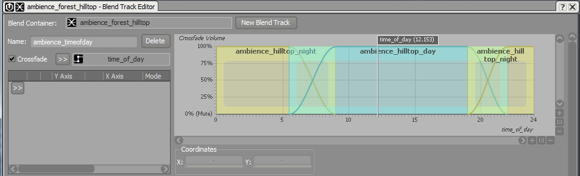
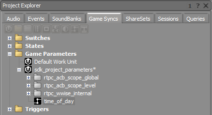
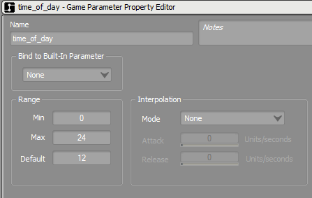
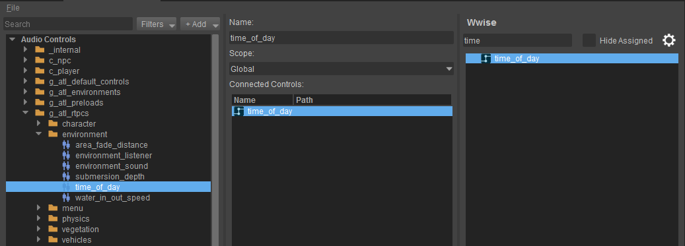
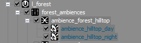
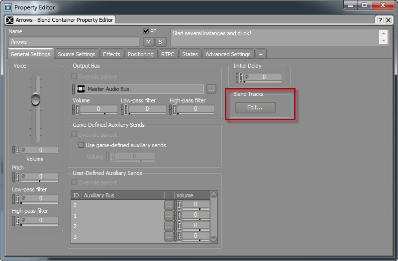
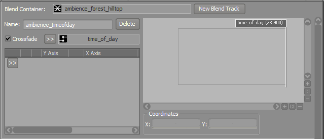
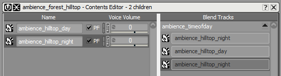

Обзор
Разделы
В этой статье объясняется, как создать дневной и ночной цикл с помощью Wwise и CRYENGINE. CRYENGINE автоматически отправляет Время суток значение (в 24-часовом формате) для аудиосистемы. Однако для того, чтобы CRYENGINE мог его получить, в редакторе элементов управления звуком необходимо создать соответствующую аудиосистему RTPC. Кроме того, этот RTPC должен называться как time_of_day и должен быть подключен к игровому параметру Wwise.

Настройка времени суток в Wwise
Чтобы настроить время суток в Wwise, откройте Синхронизация игр вкладку в Project Explorer, а затем создайте новый параметр игры с именем time_of_day в Wwise.

Теперь вам необходимо отредактировать свойства параметров игры в Wwise, чтобы убедиться, что они используют тот же диапазон, что и время суток в CRYENGINE.

Соединение времени суток в Wwise и CRYENGINE
Создав параметр игры, вы можете открыть Редактор управления звуком в CRYENGINE и подключите элемент управления Wwise к элементу управления аудиосистемой.

Создание динамической атмосферы в Wwise с помощью контейнера Blend
Вам необходимо создать настройку в Wwise, которая будет использовать недавно подключенный time_of_day Параметр игры. Вам необходимо открыть Wwise и импортировать аудиофайлы в иерархию микшера Actor, а затем создать Контейнер для смешивания и переместите туда свои файлы.

Вам нужно нажать Сдвиг и выберите звуковые объекты, чтобы включить Создайте новый контейнер родительской смеси. кнопка под Аудио вкладка.
Чтобы открыть Редактор треков смешивания, щелкните правой кнопкой мыши Контейнер для смешивания и выберите Редактировать, а затем нажмите кнопку Редактирование трека смешивания кнопка в нем Общие настройки вкладка. Вам нужно нажать кнопку Новый трек смеси Кнопка, чтобы создать новую настройку Blend Track в редакторе Blend Track.

Вам также необходимо включить Кроссфейд флажок и выберите time_of_day Параметр игры на вновь созданной дорожке смешивания.

Чтобы настроить звуковые объекты на треке смешивания, перейдите в Редактор содержания и перетащите объекты в поле «Дорожка перехода» в том порядке, в котором они должны появиться на дорожке перехода (слева направо).

Снова откройте редактор Blend Track Editor и переместите файлы соответствующим образом. Вы также можете настроить Crossfades для плавного перехода от дневной к ночной атмосфере.

После того, как вы успешно создали настройку Ambient в Wwise, обязательно заново создайте SoundBanks в Wwise, как описано. здесь.